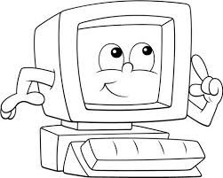

El papel de la informática en la sociedad es como el posible mayor invento de la humanidad, pero cabe resaltar que se encuentra apenas en la infancia y sus mayores impactos estan por venir.
Las computadoras han transformado nuestras vidas, ya que son el alma del mundo actual, si desaparecieran todas al mismo tiempo habrían accidentes tanto de aviones como automovilísticos, se apagaria la red eléctrica, esto afectaría a todos los servicios a nivel mundial.
La revolución industrial trajo cambios en la agricultura, la industria y la vida doméstica, debido a que la mecanización significaba cosechas superiores, alimentos y bienes producidos en masa, mas baratos y con comunicación y transportes más rápidos generando con esto mejor calidad de vida.
Estamos viviendo como la que se recordará la Era Electrónica, la tecnología de la computación está haciendo lo mismo que ocurrió con la Revolución Industrial, trayendo avances y mejoras en la agricultura, equipos médicos automatizados, oportunidades educativas y telecomunicaciones globales y nuevas fonteras como la realidad virtual y los autos de conducción automática.
No podemos dejar aun lado que los equipos electrónicos son relativamente nuevos pero la necesidad de la computación no lo es.
El dispositivo reconocido para calcular mas antiguo es "El Ábaco", inventado en Mesopotamia alrededor de 2500 A.C, se trata de una calculadora de mano que ayuda a sumar y restar muchos números, almacena el estado actual del cálculo como lo hace un disco duro de la actualidad. Fue creado porque la escala de la humanidad se habia vuelto mas grande de lo que se podia mantener y manipular en la mente de una persona. El Ábaco básico representa cada fila una potencia de 10. Donde la primera fila de abajo o fila inferior representa la unidad, la segunda fila la decena, la tercera la centena y la cuarta la unidad de mil. Si queremos representar tres solo movemos en la fila inferior hacia la derecha tres unidades, si quieremos representar el número 12, solo movemos uno en la segunda fila hacia la derecha y en la primera fila dos a la derecha y asi estaría representado el 12 y asi sucesivamente con cualquier cifra que se quiera representar.
Durante los siguientes 400 años los humanos desarrollaron todo tipo de dispositivos de computación ingeniosos como:
- El Astrolabio que permitio a los barcos calcular su latitud en el mar.
- La Regla de cálculo para ayudar con la multipicación y la división.
- Cientos de relojes creados que podían ser utilizados para calcular la salida del sol, las mareas, la posición de los cuerpos celestes o sólo la hora.
Ninguno de estos trabajos fue llamado computadora pero esto hizo que se ampliara nuestra mente y como dijo el pionero de la computación Charles Babbage:"En cada aumento del conocimiento, asi como en la invención de cada nueva herramienta, el trabajo humano se convierte en versión abreviada""
A partir de 1613 en un libro de Richard Braithwait donde no era una máquina era un puesto de trabajo, en aquellos dias una computadora era una persona que hacia cálculos esto se mantuvo hasta 1800 cuando el significado de computadora empezo a cambiar, destacan entre dispositivos el Step Reckoner construido por Gottfried Leibniz en 1694, el cual funciona de forma similar a un odómetro en el vehiculo el cual suma el número de kilometros que ha recorrido, este dispositivo sumaba, restaba y con algunos trucos mecánicos inteligentes fue capaz de multiplicar y dividir. Fue tan novedoso ya que realizaba las 4 operaciones que fue utilizado durante los 3 siglos siguientes para diseñar calculadoras.
Leibniz dijo: "Esta por debajo de la dignidad de los hombres excelentes perder su tiempo en cálculos cuando cualquier campesino puede hacer el trabajo con la misma precisión con la ayuda de una máquina"
Estas máquinas hechas a mano eran caras y no eran accesibles para la mayoria de la población, asi que antes del siglo 20 experimentaban la informática a través de tablas preemsambladas, asi que si querias saber la raíz cuadrada de un número o de una gran cifra solo tenias que buscarlas en grandes libros que contenian esta información.
Las tablas de rangos fueron creadas para permitir a los artilleros buscar las condiciones ambientales y la distancia a la que querian disparar, les indicaba el ángulo para fijar el cañon. Esto traía errores al cambiar de cañon asi que Charles Babbage reconoció este problema en 1822 en un documento de la Sociedad Real Astronómica titulado "Nota sobre la aplicación de maquinaria para el cálculo de tablas astronómicas y matemáticas".
Siguiente